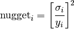

Gaussian Processes regression: basic introductory example¶
A simple one-dimensional regression exercise computed in two different ways:
- A noise-free case with a cubic correlation model
- A noisy case with a squared Euclidean correlation model
In both cases, the model parameters are estimated using the maximum likelihood principle.
The figures illustrate the interpolating property of the Gaussian Process model as well as its probabilistic nature in the form of a pointwise 95% confidence interval.
Note that the parameter nugget is applied as a Tikhonov regularization of the assumed covariance between the training points. In the special case of the squared euclidean correlation model, nugget is mathematically equivalent to a normalized variance: That is

{kind=link}
{kind=link}
Python source code: plot_gp_regression.py
print(__doc__)
# Author: Vincent Dubourg <vincent.dubourg@gmail.com>
# Jake Vanderplas <vanderplas@astro.washington.edu>
# Licence: BSD 3 clause
import numpy as np
from sklearn.gaussian_process import GaussianProcess
from matplotlib import pyplot as pl
np.random.seed(1)
def f(x):
"""The function to predict."""
return x * np.sin(x)
#----------------------------------------------------------------------
# First the noiseless case
X = np.atleast_2d([1., 3., 5., 6., 7., 8.]).T
# Observations
y = f(X).ravel()
# Mesh the input space for evaluations of the real function, the prediction and
# its MSE
x = np.atleast_2d(np.linspace(0, 10, 1000)).T
# Instanciate a Gaussian Process model
gp = GaussianProcess(corr='cubic', theta0=1e-2, thetaL=1e-4, thetaU=1e-1,
random_start=100)
# Fit to data using Maximum Likelihood Estimation of the parameters
gp.fit(X, y)
# Make the prediction on the meshed x-axis (ask for MSE as well)
y_pred, MSE = gp.predict(x, eval_MSE=True)
sigma = np.sqrt(MSE)
# Plot the function, the prediction and the 95% confidence interval based on
# the MSE
fig = pl.figure()
pl.plot(x, f(x), 'r:', label=u'$f(x) = x\,\sin(x)$')
pl.plot(X, y, 'r.', markersize=10, label=u'Observations')
pl.plot(x, y_pred, 'b-', label=u'Prediction')
pl.fill(np.concatenate([x, x[::-1]]),
np.concatenate([y_pred - 1.9600 * sigma,
(y_pred + 1.9600 * sigma)[::-1]]),
alpha=.5, fc='b', ec='None', label='95% confidence interval')
pl.xlabel('$x$')
pl.ylabel('$f(x)$')
pl.ylim(-10, 20)
pl.legend(loc='upper left')
#----------------------------------------------------------------------
# now the noisy case
X = np.linspace(0.1, 9.9, 20)
X = np.atleast_2d(X).T
# Observations and noise
y = f(X).ravel()
dy = 0.5 + 1.0 * np.random.random(y.shape)
noise = np.random.normal(0, dy)
y += noise
# Mesh the input space for evaluations of the real function, the prediction and
# its MSE
x = np.atleast_2d(np.linspace(0, 10, 1000)).T
# Instanciate a Gaussian Process model
gp = GaussianProcess(corr='squared_exponential', theta0=1e-1,
thetaL=1e-3, thetaU=1,
nugget=(dy / y) ** 2,
random_start=100)
# Fit to data using Maximum Likelihood Estimation of the parameters
gp.fit(X, y)
# Make the prediction on the meshed x-axis (ask for MSE as well)
y_pred, MSE = gp.predict(x, eval_MSE=True)
sigma = np.sqrt(MSE)
# Plot the function, the prediction and the 95% confidence interval based on
# the MSE
fig = pl.figure()
pl.plot(x, f(x), 'r:', label=u'$f(x) = x\,\sin(x)$')
pl.errorbar(X.ravel(), y, dy, fmt='r.', markersize=10, label=u'Observations')
pl.plot(x, y_pred, 'b-', label=u'Prediction')
pl.fill(np.concatenate([x, x[::-1]]),
np.concatenate([y_pred - 1.9600 * sigma,
(y_pred + 1.9600 * sigma)[::-1]]),
alpha=.5, fc='b', ec='None', label='95% confidence interval')
pl.xlabel('$x$')
pl.ylabel('$f(x)$')
pl.ylim(-10, 20)
pl.legend(loc='upper left')
pl.show()
Total running time of the example: 2.42 seconds ( 0 minutes 2.42 seconds)